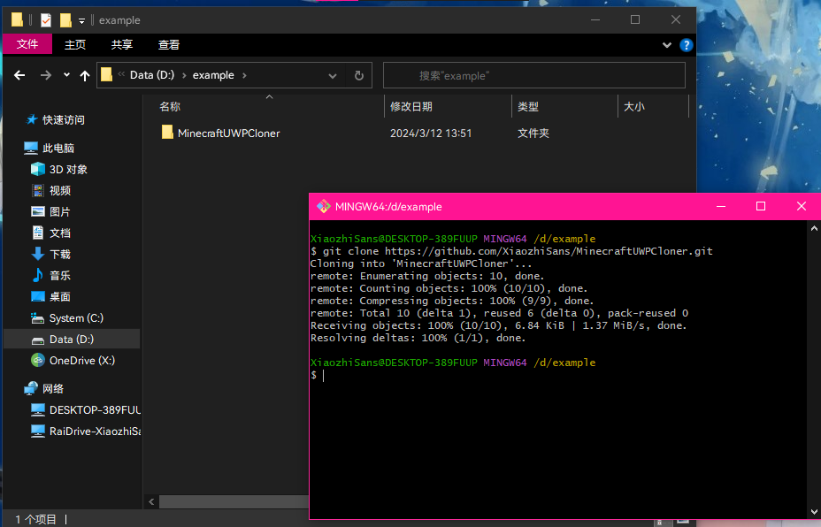
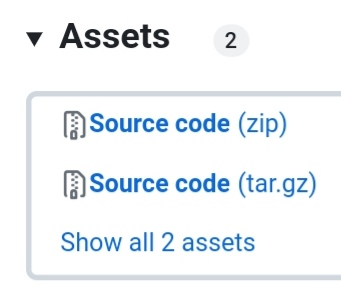
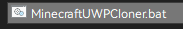
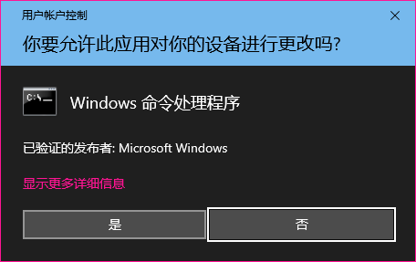
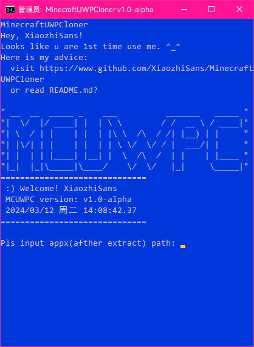
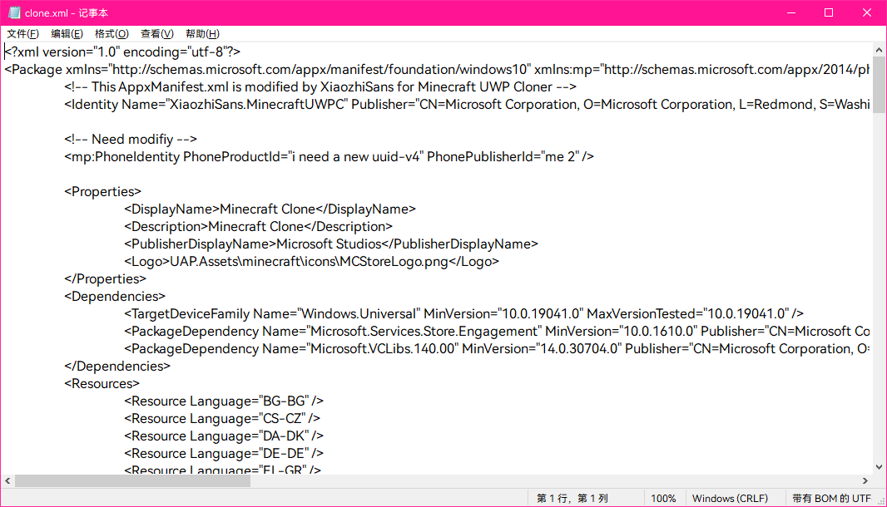
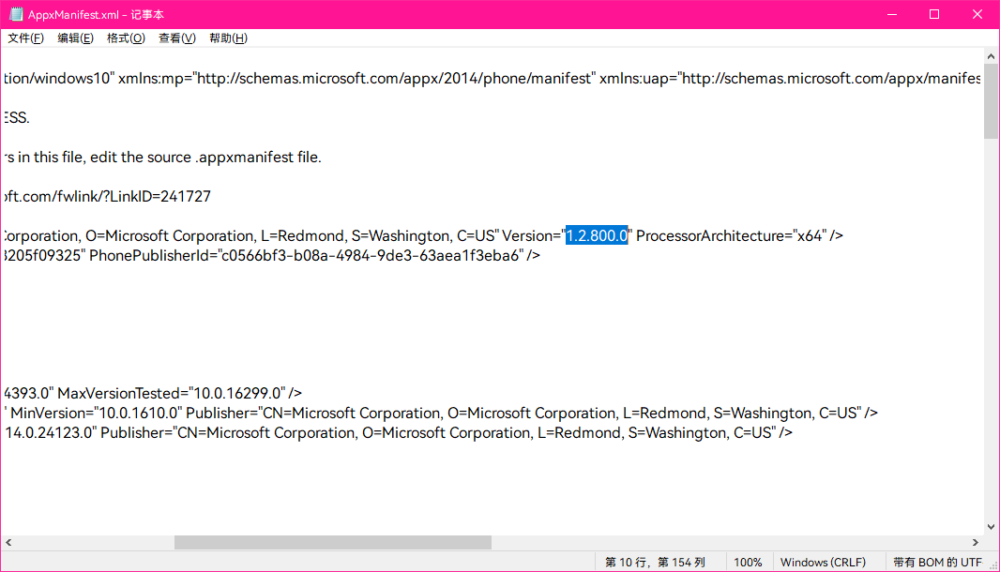
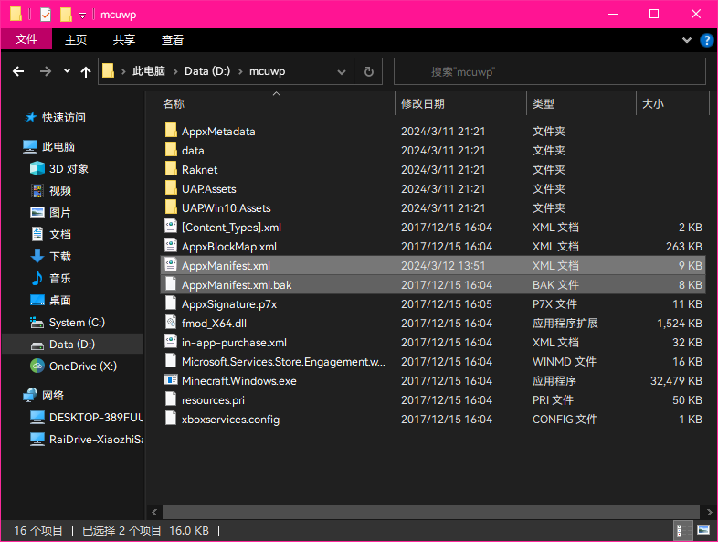
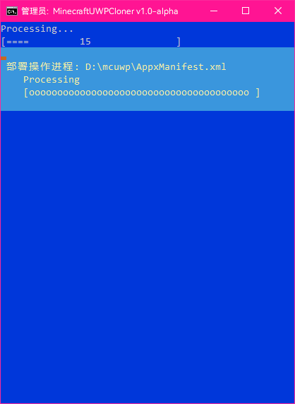
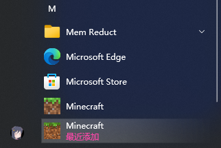

MineraftUWPCloner ("MCUWPC") is a
Minecraft UWP (Windows 10/11 bedrock edition)
Cloner.
git clone https://github.com/XiaozhiSans/MinecraftUWPCloner.git
or download release pack from here


then open MinecraftUWPCloner.bat

2.5 press yes

and u will see this window

d:\mcuwpmy advice is
2813
input 2 to enable UWP Dev mode
if u enabled, just skip
input 8 to modify clone.xml

in common, maybe we need modify 5 locations
Version
for e.g. 1.2.800.0
notice: this version is not at all equal mc verion,
pls read oringinal AppxManifest.xml to get it

ProcessorArchitecture
for e.g. x64
available value:
x64 x86 arm arm64PhoneProductId
just an uuid-v4, get new uuid-v4 at here
PhonePublisherId
ditto
ProjectGUID
just a guid, get new guid at here
press ctrl+s to save change
now back to step3 mentioned window
then input 1 and the file was soon replaced

then input 3 to install Minecraft Clone

when jump back to the menu open ur start menu

dont forget fo and star!! ~(￣▽￣)~🌹
enjoy!